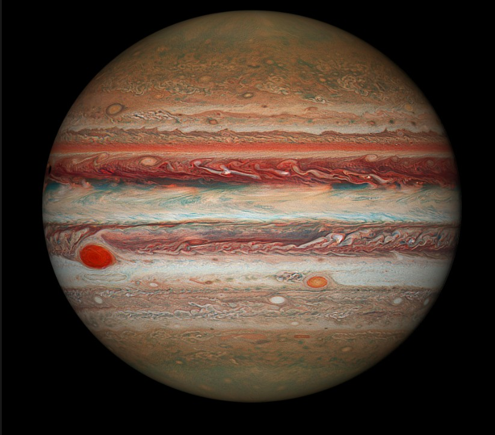
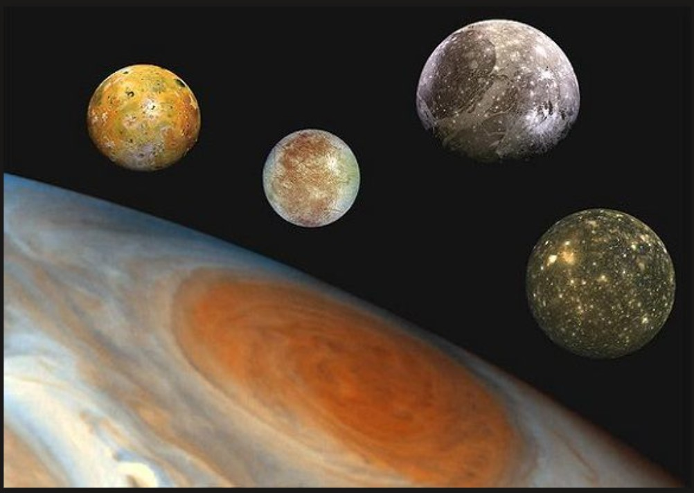

Jupiter — The Giant Planet
Jupiter is the largest planet in our solar system. It is a gas giant made mostly of hydrogen and helium, meaning it does not have a solid surface like Earth.
One of Jupiter’s most famous features is the Great Red Spot, a giant storm that has been raging for hundreds of years. Jupiter also has a strong magnetic field and many moons.

Watch Jupiter and Its Moons
Watch this video to see Jupiter and its moons in motion. You can see the Great Red Spot and the movement of the Galilean moons.
Facts About Jupiter
- Largest Planet: Jupiter is the largest planet in the solar system.
- Gas Giant: Made mostly of hydrogen and helium.
- Fast Rotation: A day lasts about 10 hours.
- Great Red Spot: A storm larger than Earth.
- Many Moons: Over 90 known moons.
- No Solid Surface: Entirely gas.
Jupiter Data
- Diameter: 142,984 km
- Distance from Sun: 778 million km
- Orbit Time: 11.86 Earth years
- Temperature: -145°C
Jupiter`s Major Moons
Jupiter`s four largest moons are Io, Europa, Ganymede, and Callisto. Click on each moon to learn more.


Io: The most volcanically active moon in the solar system.

Europa: An icy moon that may have an ocean beneath its surface.

Ganymede: The largest moon in the solar system.

Callisto: A heavily cratered and ancient moon.
Did You Know?
Click the button to learn a space fact!
Jupiter Quiz
Question will appear here